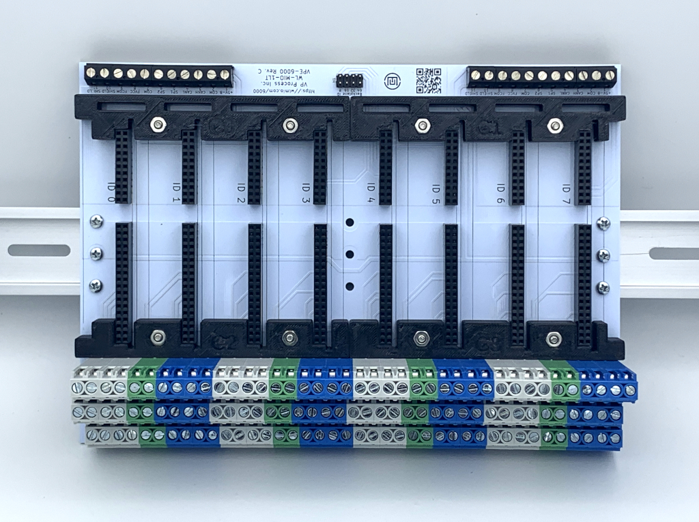
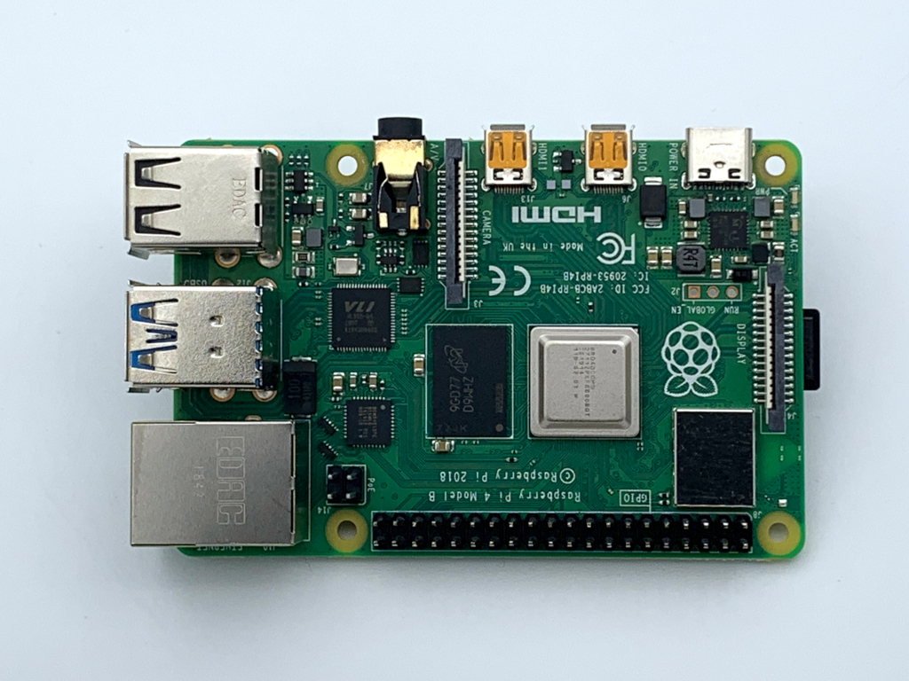

WL-MIO Multipurpose I/O Process Controller
Application Note: WL-MIO-AN-10000
System Application Notes
Introduction
Application notes are intended to describe “How 2 Begin” a WL-MIO Process Controller solution with the necessary basic WL-MIO components, infrastructure provisions, support equipment, and programming environment required to achieve an operational automated control system. The following topics comprise the scope of System Application Notes:
System Requirements
A WL-MIO Process Controller Solution requires the following:
- A minimum of 8.25 in (209.6 mm) of IEC 60715 DIN rail length
- DIN rail depth supported: 0.3 in (7.5 mm) or 0.6 in (15 mm)
- Unit volume of: 167.5 cu in (2,744.4 cu cm)
- 8.25 in (209.6 mm) Length x 5.8 in (147.3 mm) Width x 3.5 in (88.9 mm) Height
- Customer furnished 24 VDC, 4 A power supply (minimum)
- Capacity dependent on the desired power design for the total system
- Reference individual module specifications for power resource planning
- Ethernet network port and cable for WL-MIO Processor Module
- Terminal Block connection solid or stranded wire size 12 – 28 AWG (4 mm2 – 0.08 mm2 ) wire
- Equipment to access WL-MIO Processor module
- Computer with Ethernet network, SSH capable program
- I/O peripherals connected to WL-MIO Processor Module (Raspberry Pi 4)
- High definition 1920 x 1080 computer display with digital video port (HDMI or DisplayPort)
- HDMI video cable with a minimum of one HDMI male connector
Other HDMI video connector to mate with computer display input (HDMI or DisplayPort)
- USB Keyboard
- USB Mouse
Note: Connecting I/O peripherals to WL-MIO processor module requires Backplane Enclosure covers to be removed.
Back to Top
VPE-6000 Backplane
At the heart of the WL-MIO is the 8 position backplane. Any module may be located in any slot position. A programming address (Module ID) for each module position is automatically detected when a module is inserted into the backplane. The Module ID (reference VPE-6000, Backplane specification for address identification) is determined by the backplane jumper configuration and inserted module position on the backplane itself. Up to 16 backplanes (unique ID's) are available. Connecting multiple backplanes together for a WL-MIO Process Controller solution enables a CAN BUS capacity of 127 WL-MIO modules that are individually programmable.

Functions of the VP-6000 Backplane are:
- Provides backplane and module programming address configuration via 4 position jumper block
- Capacity of up to 8 WL-MIO modules that may be inserted into any position
- Enables "Hot Swapping" of modules with orientation guides for positive module insertions
- Module replacement performed without disrupting I/O wiring.
- Colored terminal blocks associated with each module position enables ease of associating module position to I/O device wiring position
- Each module position supports:
- up to 12 terminal connections as defined by each WL-MIO module
- up to 3 terminal connections for ground
- CAN bus and bus power terminals for connecting multiple backplanes.
- Connection to external 5 VDC power supply for processor and module bus power when internal Processor and Bus Power Supply (VPE-6010)
Back to Top
Processor and Module Bus Power Supply
All WL-MIO modules use 5 VDC power for operation. VPE-6010, Power Supply 5 VDC Module, provides an integrated and redundant capability for the WL-MIO Processor Controller solution. Primary power via an external 24 VDC is required for power input through the terminal connectors associated with location of the backplane module position where the VPE-6010, Power Supply 5 VDC Module, is inserted. There are two primary power inputs to enable enhanced continuity of operations should one primary power fail.
Functions of the VPE-6010 Power Supply are:
- Capacity of up to any combination of 15 WL-MIO modules (12 WL-MIO when Processor Modules are installed.)
- More than one VPE-6010, Power Supply 5 VDC Module, adds processor and module bus power redundancy and improves continuity of operations
- Input and output power (voltage and current) are monitored for system management of the WL-MIO Processor Control solution
- Status indicator
Back to Top
Processor Module
The WL-MIO processor module adapts the industry accepted Raspberry Pi 4 Model B mounted to WL-MIO carrier module to provide the processing capability for the WL-MIO Processor Controller.
RS-485 and HART external communication functions are available for the WL-MIO Processor Controller solution. RS-485, and RS-485 plus HART are the two module options for external communications.

Two WL-MIO modules without Raspberry Pi 4 Module B modules offers system flexibility in utilizing the total Raspberry Pi product offerings that fit the mechanical and electrical interfaces.
- VPE-6020 Raspberry Pi Carrier module c/w RS485 (RPi 4 NOT included))
- VPE-6020-H Raspberry Pi Carrier module c/w RS485 & HART (RPi 4 NOT included)
Two WL-MIO processor kits combine the WL-MIO carrier with a Raspberry Pi 4 Module B configured with 2 GB RAM and 16 GB SD card.
- VPE-6025 Raspberry Pi 4 Processor Kit & RS-485
- (c/w RPi 4, SD Card & “libwlmio” library
- VPE-6025-H Raspberry Pi Carrier module c/w RS485 & HART
- (c/w RPi 4, SD Card & “libwlmio” library)
WL-MIO Processor Controller provides external access to the Raspberry Pi 4 Ethernet and USB ports on the side opposite to the I/O device wiring terminal blocks. Other Raspberry Pi interfaces (e.g. SD card, video, audio) are accessible with covers removed.
Back to Top
Software
The programming environment for the WL-MIO Process Controller leverages the same as Raspberry Pi 4. To begin programming WL-MIO Process Controller, reference the Raspberry PI 4 documentation for configuring, and establishing the environment.
At the heart of the WL-MIO Processor Controller software is the "libwlmio" library. An open source library available from the GitHub repository Widgetlords.
The processor kits come with the software pre-installed on the provided SD card.
The libwlmio library contains the following modules:
- "C" Code and header files
- "C" demo code and helper files
- Python wrappers
- Python demo code for each type of module
The individual Software Application Notes available for each module provide sample PYTHON code under "Applications" Menu.
Back to Top